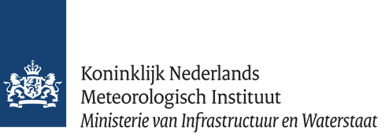
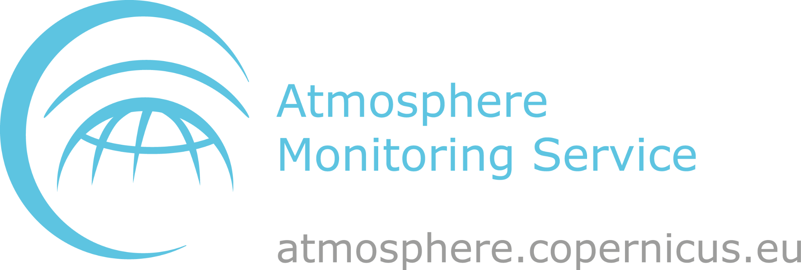

KNMI — Royal Netherlands Meteorological Institute
Scientific contact: Michiel van Weele
Atmospheric scientist specializing in atmospheric composition, air quality, climate interactions, and satellite observations.
Visit KNMIScientific contacts and links to atmospheric and climate research institutions and public services.

Scientific contact: Michiel van Weele
Atmospheric scientist specializing in atmospheric composition, air quality, climate interactions, and satellite observations.
Visit KNMIApplied research in areas including climate, air quality and Earth observation.
Visit TNO
Atmospheric composition information, air quality forecasts and data access.
Explore CAMSClimate information, datasets and tools for understanding climate variability and change.
Explore C3SInstitutional names identify affiliations and external resources. Inclusion does not imply an institutional partnership or endorsement of LUWA.
← Back to Home